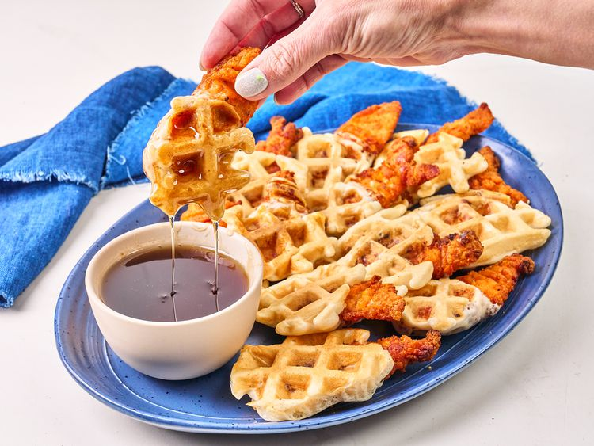

You only need 3 ingredients to get the full chicken a nd waffel experience with these shortcut chicken ad waffels bites. Lightly breaded chicken tenders are dipped in pancake batter, and popped into a waffel iron until they are crisp and golden. Serve with syrup for dipping.
Prepare chicken tenders according to package instructions.
Prepare pancake mix according to instructions. Pour mixture into a bowl.
Meanwhile heat up a waffle iron. Spray waffle iron with non-stick spray. Take 1 to 4 chicken tenders at a time, depending on the size of your waffle iron, and dip tenders halfway into the pancake batter; Place into waffle iron. Cook until golden brown.
Remove from the waffle iron into a plate. Continue cooking remaining chicken.
Serve immediately with syrup for dipping.